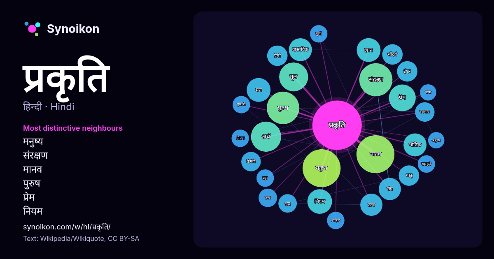

हिन्दी · लोकप्रिय शब्द
प्रकृति
“nature” · विकिपीडिया, Wikiquote के 991 प्रयोगों में इसके आसपास मिले शब्द।

सबसे विशिष्ट पड़ोसी
- मनुष्य 21×
- संरक्षण 20×
- मानव 17×
- पुरुष 17×
- प्रेम 13×
- नियम 11×
- प्रेमी 11×
- भौतिक 11×
- प्रेमियों 10×
- सौंदर्य 10×
- तत्व 9.6×
- मन 9.3×
- स्वभाव 9.2×
- तत्त्व 9.1×
- वास्तविक 8.9×
- धातु 8.7×
- अर्थ 8.6×
- ईश्वर 8.4×
- उपहार 8.0×
- मूल 7.8×
× = सामान्य विकिपीडिया टेक्स्ट की तुलना में कितने गुना अधिक।
सबसे अधिक आने वाले पड़ोसी
- मनुष्य 38
- मानव 38
- संरक्षण 29
- पुरुष 28
- अर्थ 24
- मूल 22
- अनुसार 21
- कारण 19
- प्रेम 19
- उसकी 18
- जीवन 18
- प्रकार 18
- तीन 17
- नियम 16
- ज्ञान 15
- मन 15
- भौतिक 14
- वास्तविक 14
- विज्ञान 14
- केवल 13
संदर्भ में
- प्रकृति, व्यापकतम अर्थ में, प्राकृतिक, भौतिक या पदार्थिक जगत या ब्रह्माण्ड हैं। "प्रकृति" का सन्दर्भ भौतिक जगत के दृग्विषय से हो सकता है और सामन्यतः जीवन Wikipedia snippets · प्रकृति
- अंतर्राष्ट्रीय प्रकृति और प्राकृतिक संसाधन संरक्षण संघ , प्राकृतिक संसाधनों के संरक्षण के लिए समर्पित एक अन्तर्राष्ट्रीय संगठन है। संगठन का घोषित लक्ष्य Wikipedia snippets · अंतर्राष्ट्रीय प्रकृति संरक्षण संघ
- प्रकृति पुरुष कालिदास शिवमंगल सिंह सुमन की रचना है। द • वा • ब शिवमंगल सिंह 'सुमन' की कृतियाँ पद्य कृतियाँ- हिल्लोल । जीवन के गान । प्रलय-सृजन । विश्व … Wikipedia snippets · प्रकृति पुरुष कालिदास (नाटक)
- अवधारणा का व्यापक उपयोग होता है। प्रकृति हमारे लिए मात्र संसाधनों की स्रोत न होकर प्रेरणा की भी स्रोत होती है। प्रकृति अभिप्रेरित निर्माण की अवधारणा कोई Wikipedia snippets · प्रकृति अभिप्रेरित निर्माण
- अनेकों भारतीय दर्शनों में प्रकृति की चर्चा हुई है। प्रकृति मूल कारण, स्वभाव या रूप। सांख्य दर्शन में सत्कार्यवाद के अनुसार कार्य अपने कारण में उत्पत्ति Wikipedia snippets · प्रकृति (धर्म)
- पुरालेखित।. अभिगमन तिथि: 2013-10-20. "डुमना प्रकृति अभयारण्य उद्यान". जबलपुर जनपद, जालस्थल. दुमना प्रकृति आरक्षित जैव विविधता प्रतिवेदन Archived 2024-07-08 Wikipedia snippets · डुमना प्रकृति अभयारण्य उद्यान
- दर्शन में, प्रकृति के दो अर्थ होते हैं। पहला, इसका सन्दर्भ उन सारी चीजों के समुच्चय से हैं जो प्राकृतिक हैं, या प्रकृति के विधि के अनुसार सामान्य रूप से Wikipedia snippets · प्रकृति (दर्शन)
- प्रकृति विज्ञान प्रकृतिक तत्वों से संबंधित जानकारी देता है। Wikipedia snippets · प्रकृति विज्ञान
और शब्द
- इतिहास
- ईश्वर
- कार्य
- कुत्ता
- गर्मी
- गाना
- घंटी
- घड़ी
- घोड़ा
- चाय
- चित्रकला
- छाया
- जंगल
- जलवायु
- जीवन
- तूफ़ान
- दर्पण
- द्वीप
- नक्षत्र
- नमक
- परिवार
- पहाड़
- पानी
- पैसा
- बगीचा
- बिल्ली
- भाषा
- भोजन
- माता
- मानचित्र
- मृत्यु
- मौन
- रेगिस्तान
- रेलगाड़ी
- रोटी
- वर्षा
- विज्ञान
- शक्ति
- शरद
- शहद
- शहर
- सड़क
- सत्य
- समय
- सर्दी
- सेतु
- स्वर्ण
- स्वास्थ्य
- हृदय
2026-10-09 को डिफ़ॉल्ट सेटिंग्स (±5 शब्द, मध्यम कॉर्पस) के साथ पहले से गणना की गई। इंटरैक्टिव मानचित्र इसे लाइव डेटा से ताज़ा कर सकता है।
मशीन-अनूदित इंटरफ़ेस; सुधारों का स्वागत है।